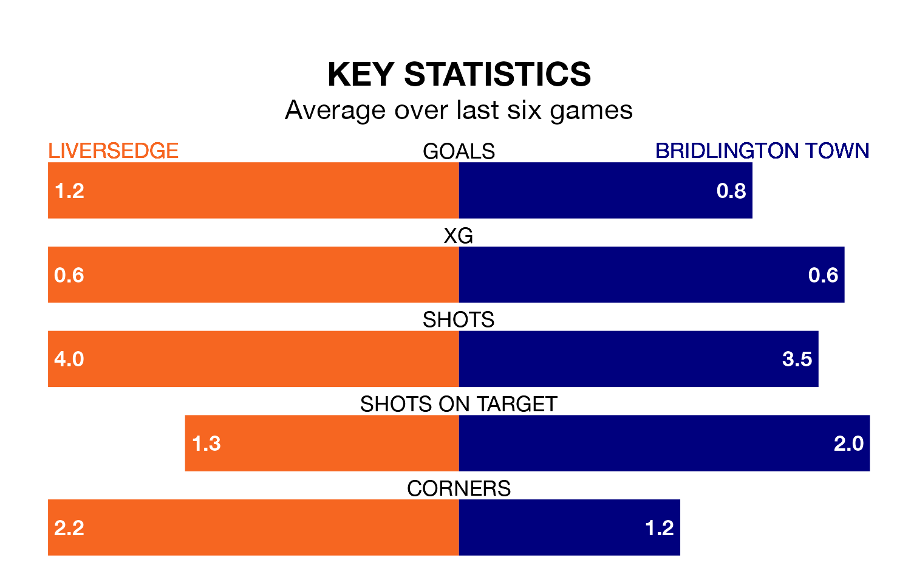

Liversedge host Bridlington Town on Saturday in the Northern Premier League Division One East.
In their last league match, on Monday, Liversedge lost to Brighouse Town 3-2 away.
Bridlington won, 2-0 at home against Winterton Rangers on December 30.
Liversedge are in disappointing form in the Northern Premier League Division One East, with one win and two draws from their last six games.
With two wins and a draw over that period, Bridlington's form is slightly better – they have taken seven points from 18, compared to the home team's five.
With 29 goals in 22 games so far this season, Town are scoring at below the league average rate with 1.3 goals per game. But they are conceding fewer than average too, letting in 33 goals at a rate of 1.5 per game.
Liversedge are also below average scorers, with 1.5 goals per game, compared to a league average of 1.6. They have conceded 1.3 goals per game.
Liversedge are 13th in the table after 17 games, of which they have won seven and drawn two, earning 23 points.
The visitors are three places ahead of the hosts in 10th, with eight wins and three draws putting them on 27 points.
Updated: 12:57, 02/01/24